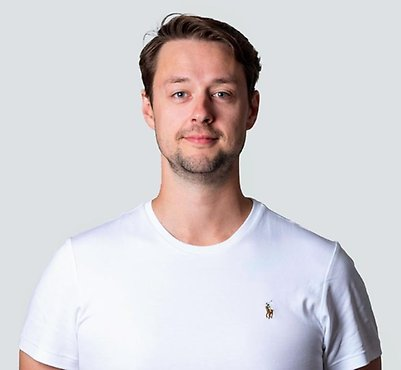
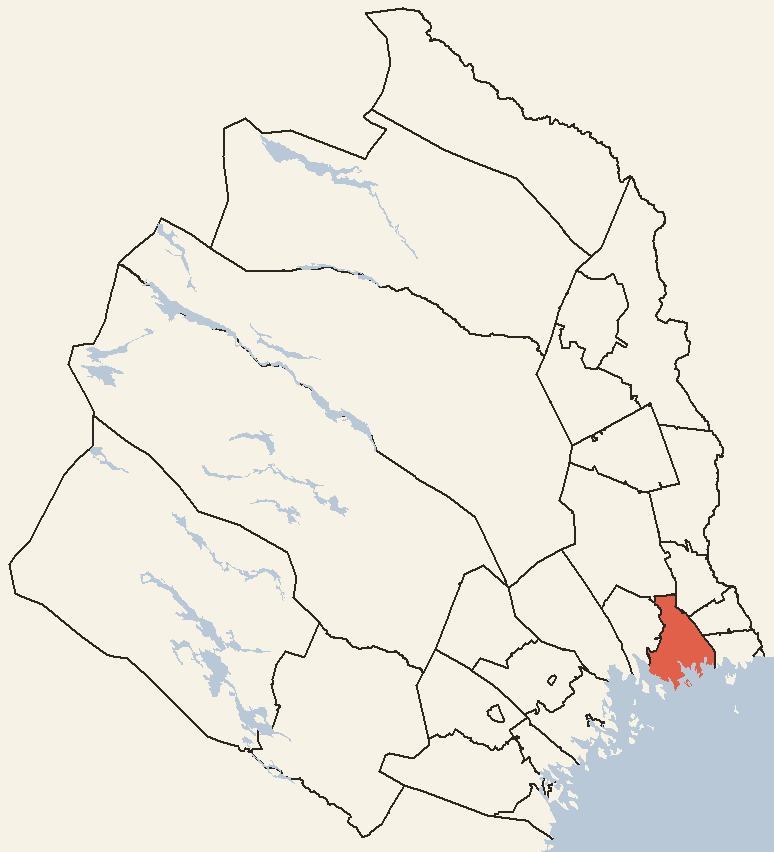
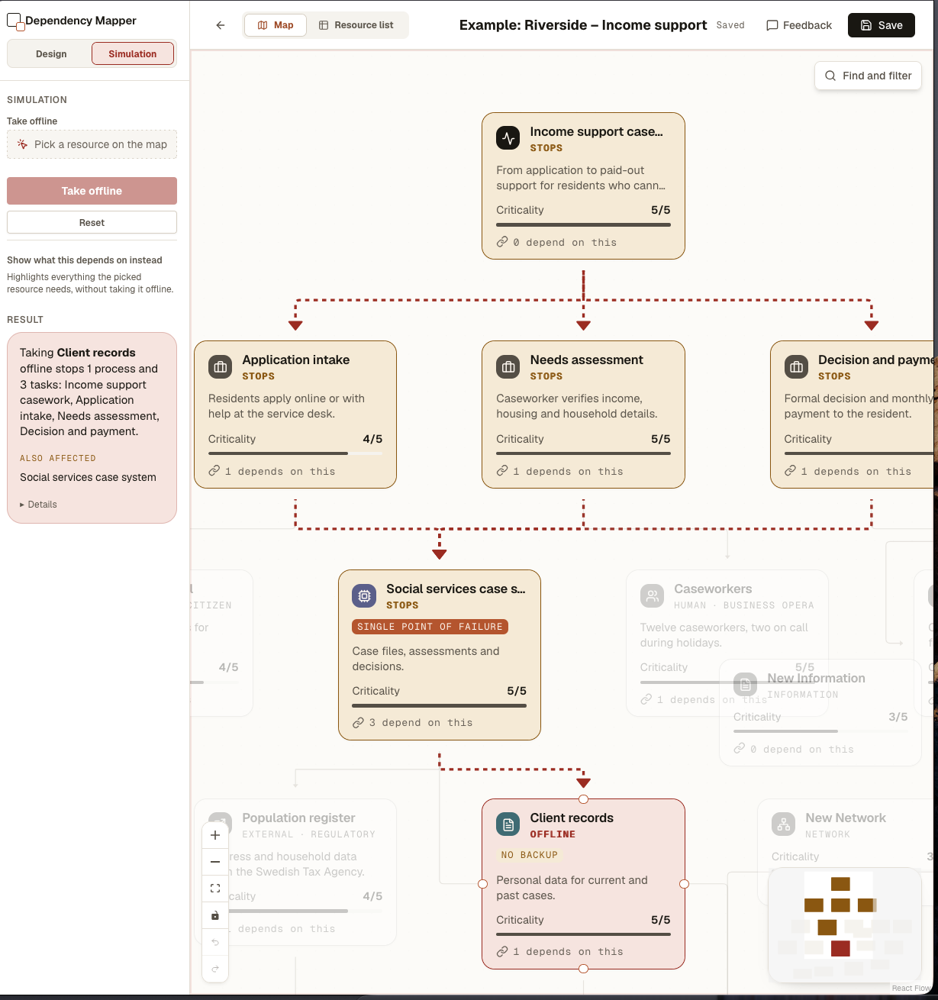

Cyberkrisen i Kalix kommun
Hej och välkomna!!
Vem bär bördan för cyberresiliens?
Ställ frågan högt och låt tystnaden sitta kvar en stund innan du går vidare — inget svar förväntas här och nu. Möjliga svar som brukar komma upp: IT-avdelningen (de stoppade spridningen och byggde om), ledningen (de höll ihop organisationen och tog de stora besluten), eller personalen längst ut i verksamheten (de höll vården igång för hand). Alla tre är rimliga — men vi knyter ihop det riktiga svaret på den sista bilden.

Anton Holmström
Doktorand, informationssäkerhet — Institutionen för system- och rymdteknik
Forskar på cyberresiliens — hur organisationer motstår, återhämtar sig från och anpassar sig efter cyberincidenter, med fokus på den mänskliga faktorn.
Anton Holmström heter jag och är doktorand på Luleå Tekniska Universitet
“Mitt forskningsfokus ligger på att förstå och stärka cyberresiliens, med särskilt intresse för den mänskliga faktorn och balansen mellan teknik och människa. Jag arbetar med att operationalisera cyberresiliens genom att identifiera arbetssätt och strategier som gör organisationer mer motståndskraftiga mot cyberhot. Kort sagt, jag undersöker hur vi kan bygga upp en flexibel och effektiv cyberresiliens som integrerar både tekniska lösningar och mänskliga faktorer.”
Jag drivs av frågan: Hur blir vi cyber resilienta?
Kalix kommun, december 2021
En storskalig ransomware-attack slog ut kommunens IT-system över natten och tvingade hela socialförvaltningen tillbaka till papper och penna.

Kalix kommun, NorrbottenKort bakgrund: natten mellan 15–16 december 2021 upptäcktes en storskalig ransomware-attack mot Kalix kommun (~15 500 invånare, Norrbotten). Attacken krypterade nästan alla servrar, tvingade IT att bygga om infrastrukturen från grunden och satte hela socialförvaltningen i analogt läge under flera veckor.
Presentera strukturen för resten av föreläsningen: vi går igenom de tre perspektiven i tur och ordning — IT, ledning, socialförvaltning — och landar sedan i vad vi kan lära oss och koppla till vårt eget säkerhetsarbete.
Från driftstörning till kris
Natten mot 16 december: nattpersonalen i hemtjänsten kan inte logga in i verksamhets- och planeringssystemen. Rapporteras vidare, men tolkas som en tillfällig driftstörning.
Från driftstörning till kris
Morgonen: dagspersonalen fortsätter rapportera att systemen är nere — via enhets- och områdeschefer till socialchefen och vidare till kommundirektören. Läget bedöms så allvarligt att krisledningen i centrala ledningsgruppen kopplas in direkt. Samtidigt får IT samma signaler från hela kommunen, anar en attack och kallar in sina IT-konsulter och Microsoft.
Från driftstörning till kris
Förmiddagen: krisledningsstaben samlas för en lägesbild. Helt analog stabsmetodik — säkerhetschefen och krisledningen bygger lägesbilden på whiteboard, som blir navet i krisarbetet (åtgärder, resursfördelning, vem gör vad). Kommunen går upp i stabsläge, med ett 48-timmarsperspektiv — man tror fortfarande att det är en driftstörning.
Från driftstörning till kris
Mitt på dagen: IT och konsulterna konstaterar att det är en omfattande cyberattack — ransomware. Servrar och databaser som styr verksamhetssystemen är krypterade. Första kontrollen: backuperna — de har klarat sig. Planeringen av återställningen börjar.
Från driftstörning till kris
Eftermiddagen: stabsmöte, krisledningen informeras om attacken. Politikerna involveras — av demokratiska skäl ska detta inte hanteras enbart av tjänstepersoner. Normal beslutsgång, krisledningen med kommundirektören i spetsen. Beslut: ingen lösensumma betalas, polisanmälan görs, kommunen ska vara transparent om vad som händer.
Från driftstörning till kris
Dag 2 (17 december): återställningen kommer ta betydligt längre tid än väntat — från 48-timmarsperspektiv till långsiktig krisplan. Krisledningen möts två gånger dagligen. Under dagen beslutas att hela interna nätverket tas offline för grundlig utredning och ombyggnad — stora delar av kommunens verksamhet hamnar offline.
OFFLINE
Hela kommunens interna nätverk · december 2021Hela interna IT-nätverket offline — inga verksamhetssystem fungerar.
Kalix.se nere — information måste spridas på andra sätt.
Mejlen fungerar bara delvis — opålitlig kommunikationskanal.
Socialförvaltningen hårt drabbad — helt analogt arbete, planering med papper och penna.
Ekonomiavdelningen: problem att betala ut löner och fakturor.
Lokaler där ventilationssystemet låg nere — mitten av december, mycket kallt i Kalix.
Allt detta mitt i coronapandemin.
Vad bygger det här på?
det är en fallstudie byggd på 19 semistrukturerade intervjuer med nyckelpersoner inom IT, ledning och socialförvaltning, där flera intervjuades både initialt och i uppföljning.
Det kompletteras med polisrapport, interndokumentation, mediebevakning och konsultrapporter för att kunna trianguleras mot varandra.
Det tekniska händelseförloppet
Vi börjar med att titta på hur attacken initierades och utvecklades över tid. Dock, den tekniska rapporten som skickades till polisen är sekretessbelagd, men efter omfattande intervjuer med IT-personal och konsulter, samt granskning av både interna och externa dokument, har jag lyckats återskapa händelseförloppet.
Antagonisterna får tillgång till ett användarnamn och ett lösenord på något sätt. Exakt hur detta gick till kan inte fastställas, men baserat på den information som finns är den mest troliga teorin att användarnamn hämtades från en läckt databas eller genom en social engineering-attack, som till exempel phishing. Med detta användarnamn börjar man logga in på systemet, använder bruteforce eller passwordspray
Så småningom lyckas de komma in på domänkonto, med omfattande rättigheter inom systemet.
Det tekniska händelseförloppet
Med dessa inloggningsuppgifter får de dessutom tillgång till kommunens VPN.
VPN:en saknade MFA — användarnamn och lösenord räckte.
Det tekniska händelseförloppet
Med tillgång till VPN:en och ett administratörskonto har antagonisterna nu full åtkomst till det interna nätverket, och därmed också tillgång till kritiska servrar och databaser, inklusive Active Directory.
Det tekniska händelseförloppet
Med denna åtkomst påbörjar de förberedelserna för sin attack. De skapar ett nytt domänadministratörskonto. Syftet med detta steg är att dölja deras aktivitet så mycket som möjligt och minimera risken för att trigga larm i säkerhetssystemet.
Det tekniska händelseförloppet
Nästa steg är att de går in i gruppolicyhanteringen (Group Policy) och avaktiverar alla endpoint-säkerhetspolicys. Detta är ett kritiskt moment som gör att de kan neutralisera alla säkerhetssystem som annars skulle kunna stoppa deras attack.
Det tekniska händelseförloppet
Därefter använder de PowerShell-kommandon för att hämta ner och exekvera skadlig kod på varje server, som i sin tur leder till att alla servrar börjar krypteras, steg för steg.
Ransomwaren raderade shadow copies och systembackuper, ändrade boot-konfigurationen och raderade sig själv efter krypteringen — försvårar återställning och spårning.
Medan krypteringen sprider sig, börjar verksamhetens kritiska system slås ut ett efter ett, och IT-avdelningen upptäcker till slut att stora delar av nätverket är under attack.
Hantering av incidenten
Initial hantering: Ett “war-room” sattes upp och ett specialistteam samordnades. Den skadliga koden isolerades och forensiska bevis (loggar, minnesbilder) säkrades och överlämnades till polis.
Hantering av incidenten
Analys och urval av säkerhetskopior: Backuper undersöktes för att identifiera opåverkade kopior från tiden före attacken. (Om nån frågar så fångade dem ransomwaren och fick "digitala fingeravtrycket" och kunde se om den var aktiv på backupen)
Hantering av incidenten
Isolerad återställning: Systemen återställdes från dessa säkerhetskopior i en isolerad IT-miljö för att undvika ytterligare infektion.
Hantering av incidenten
Manuell återinstallation: Datorer och servrar installerades om manuellt med hjälp av Microsoft Defender for Endpoint, i nätverksmiljöer med begränsad trafik.
Hantering av incidenten
Modernisering av IT-miljö: Istället för att återgå till den gamla infrastrukturen byggdes en ny, mer säker miljö med molntjänster (Microsoft 365) och nätverkssegmentering.
Hantering av incidenten
Gradvis återgång till drift: Efter säkerhetstest återställdes systemen stegvis till full drift, med fortsatt övervakning via Defender.
Hantering av incidenten
Inte två dagar, det här är fyra veckor
Alla användarkonton nollstäldes och användarna fick skapa nytt lösenord med hjälp av BankID och dem som inte hade tillgång till det fick komma med legitimation till IT-avdelningen
Beslut under press
- Liv och hälsa
- Demokratin
LEDA I OVISSHET
Ingen kunde förutse vilka effekter attacken skulle få → tidigt stabsläge. Central krisledningsgrupp med representanter från alla förvaltningar: samordning och informationsdelning. Varje förvaltning hade också en egen lokal krisledning parallellt → informationen nådde snabbt ut och verksamheterna kunde ställa om.
Beslut under press
- Liv och hälsa
- Demokratin
PRIORITERINGAR
Kommunledningen med kommundirektören i spetsen: få förvaltningarna att samarbeta. Personal från hela kommunen, även de som inte jobbar operativt, kallades in för att stötta, t.ex. i hemtjänsten.
1. Liv och hälsa: äldreomsorg och hemtjänst ska fungera.
2. Demokratin: politiska beslut ska kunna fattas trots attacken.
Beslut under press
- Liv och hälsa
- Demokratin
PENGARNA MÅSTE UT
Manuella rutiner för löner och försörjningsstöd så att de betalades ut i tid. De systemen var bland de första som återställdes.
Beslut under press
- Liv och hälsa
- Demokratin
TRE ÅR PÅ FYRA VECKOR
IT-säkerhetsinvesteringar planerade över tre år genomfördes på fyra veckor: uppgraderade system och utbildning av personalen i cybersäkerhet.
———
Öppenhet som strategi
Kommunen valde total transparens — kontinuerlig information till både medarbetare och medborgare, även när de digitala kanalerna låg nere.
ÄGA INFORMATIONEN
En av de första punkterna på agendan: hålla anställda och medborgare uppdaterade om läget och åtgärderna. Kommunen ville äga sin egen information för att förhindra rykten och förvirring.
Två kontaktpersoner för media och andra intressenter: kommundirektören och informationsansvarig. Gemensam kommunikationsstrategi inför uttalanden, pressträffar och inslag i egna tv-kanalen.
Kanaler: pressmeddelanden, direktsända presskonferenser, tillfällig webbplats, sociala medier, Kalix-TV och externa medier.
Samtidigt på socialförvaltningen
När nätverket var nere stod förvaltningen utan sina digitala verktyg — men vården kunde inte vänta.
SAMTIDIGT PÅ SOCIALFÖRVALTNINGEN
Nätverket nere → inga verksamhets- och planeringssystem. Mejlen fungerade bara delvis — opålitlig kanal.
Vården kunde inte pausas: hemtjänst och äldreomsorg måste fungera dygnet runt, strax före jul.
Nästa bilder: hur det gick till i praktiken.
Vården på minnet
Helt analogt från första förmiddagen — mediciner och måltider först.
påbörjar helt analogt arbete,
Enhetschefer tillsammans med anställda började omedelbart att organisera scheman och prioritera vårdinsatser, särskilt livsviktiga delar som mediciner och måltider.
Hemtjänstpersonal fick förlita sig på sitt minne och tidigare erfarenhet för att organisera arbetet, eftersom systemen var helt nere. En enhetschef berättar att hon var ute i sekretesstunnorna, där man slänger sekretessbelagd information som ska till dokumentförstöraren, för att leta efter information att arbeta med, t.ex. patientlistor och scheman.
En del i planeringsarbetet på socialförvaltningen är att koordinera var man behöver vikarier, då hemtjänsten är en ganska vikarietung del av kommunen och då många ordinarie personal hade sökt ledigt under just julen blev det en utmaning att analogt koordinera vilka vikarier som skulle vart och när.
Nära varandra — och i mobilen
När systemen och mejlen svek fick kommunikationen ske ansikte mot ansikte och via telefon.
På plats
Planeringen skedde i nära samspel mellan enhetschefer och anställda.Via mobilen
SMS och samtal till personalen — och ett telefonnummer för vårdtagare och anhöriga.KOMMUNIKATIONEN — EN AV DE STÖRSTA UTMANINGARNA
PÅ PLATS
Tvungna att arbeta nära varandra — planeringen skedde i samspel mellan enhetschefer och anställda, ansikte mot ansikte.
VIA MOBILEN
Löpande information till anställda via SMS och telefonsamtal.
Mailen låg till största delen nere, man kunde inte lita på att folk kom åt sina mail och således inte säker att alla fick mailen
VÅRDTAGARE OCH ANHÖRIGA
Ett telefonnummer gick ut till allmänheten så att vårdtagare och närstående kunde nå förvaltningen om något missades.
KONTEXTEN
Mitt i coronapandemin — den analoga omställningen pressade vårdpersonalen ytterligare. Flera rapporterade att den ökade medienärvaron gjorde situationen jobbigare.
Ett nytt normalläge
Systemen återställdes stegvis under flera veckor.
ÅTERGÅNG TILL DIGITALT ARBETE
Systemen återställdes successivt. 10 januari 2022: de flesta IT-system stabila nog för att återgå till ett mer normalt läge.
SLUTLIG ÅTERSTÄLLNING
Små störningar fortsatte ännu en tid — personalen förblev i hög beredskap.
Två organisationer, samma attack
Organisation A och organisation B utsätts för samma cyberattack.
Båda visar sig i slutändan vara resilienta — de överlever attacken och klarar av att hantera den.
Samma mål — olika vägar dit
Båda når resiliens — skillnaden är vägen dit.
A: väl förberedd, har förmågan att hantera attacken effektivt → rak väg.
B: saknar förberedelse och förmåga → lång, krokig väg till samma mål.
KALIX VAR ORGANISATION B: fyra veckor med papper, minne och mobil, patientlistor ur sekretesstunnorna. De klarade sig — tack vare personalen.
För kalix del så är målet att gå från Organisation B till Organisation A
och det gör man så här
Vad Kalix gjorde efteråt
Tekniken
Plockade de lågt hängande frukterna- Microsoft 365 och molntjänster
- Defender for Endpoint och isolerad SIEM
- Nätverkssegmentering och nivåindelade behörigheter
- Ny VPN med MFA och geo-fencing
- Alla lösenord bytta via BankID
Verksamheten
- Nano learning — korta säkerhetslektioner via mejl
- Analoga kopior av nycklarna till de digitala låsen
- Ny informationssäkerhetspolicy för hela kommunen
- Ny planering — bort från minut-för-minut-scheman
TEKNIKEN: hela IT-miljön byggdes om — M365/molntjänster, Defender for Endpoint, alla klienter ominstallerade via isolerad SIEM. Segmentering och nivåindelade användarnivåer. Ny VPN med MFA och geo-fencing (17 jan). Alla lösenord bytta via BankID, eller legitimation på plats.
Ombyggnad planerad över tre år — klar på fyra veckor.
DE LÅGT HÄNGANDE FRUKTERNA — samma kedja som attacken: VPN utan MFA → nu MFA. Domänadminkonto → nivåindelade behörigheter. Endpoint-skydd avstängt via GPO → Defender och övervakning. Backuperna klarade sig — det gjorde Kalix rätt.
VERKSAMHETEN: nano learning — korta lektioner via mejl som man klickar sig igenom. Upplevs positivt, men risk att man bara klickar förbi.
Digitala lås i hemtjänsten: analoga kopior av alla nycklar — de var på väg att fasas ut innan attacken.
Ny informationssäkerhetspolicy — fanns inte vid attacken.
Schemaläggning bort från minut-för-minut-planering.
Analog reserv — och lärdomar som bleknar
Analog redundans
- Kritiska processer behöver en analog reservväg — inte bara teknisk backup
- Kommunikation behöver redundans: call chains och fysiska möten ersatte mejl
- Scheman och patientlistor i icke-digitalt format
Men lärdomarna bleknar
- Medvetenheten ökade efter krisen — och avtog sedan
- Analoga backuper gjordes i början — inte idag
- Uppföljningen blev teknisk och stannade inom IT
ANALOG REDUNDANS: kritiska processer behöver en analog reservväg — inte bara teknisk backup. Kommunikationskanaler behöver redundans: call chains och fysiska möten ersatte mejl och inloggning. Scheman och patientlistor bör finnas i icke-digitalt format.
Digitala lås: analoga kopior av alla nycklar — var på väg att fasas ut innan attacken.
MEN LÄRDOMAR BLEKNAR: medvetenheten ökade efter krisen men avtog över tid. ”I början var vi vaksamma, men det har börjat avta.” — undersköterska
Analoga backuper gjordes i början — inte idag. Uppföljningen blev till stor del teknisk och stannade inom IT.
Citat: ”Vi är nu i en normaliseringsfas … det är nu vi inte får slappna av.” — anställd, socialförvaltningen
Koppla ihop IT och verksamheten
Informations- och cybersäkerhet måste bli en del av verksamhetens risk- och krisplanering — inte bara IT:s.
I Kalix: en enhetschef från äldreomsorgen blev informationssäkerhetssamordnare — en bro mellan verksamheten och IT.
DEN VIKTIGASTE LÄRDOMEN
Bron över glappet: informations- och cybersäkerhet måste bli en del av verksamhetens risk- och krisplanering — inte bara IT:s.
IT → VERKSAMHET
Riskbedömningar ska kartlägga vilka arbetsuppgifter varje system bär. Exempel: ärendesystemet är inte bara en server — det är hela försörjningsstödet.
VERKSAMHET → IT
Krisövningar ska innehålla digitala störningar. Exempel: nätet offline i fyra veckor — inte bara personalbortfall.
SÅ GJORDE KALIX
En enhetschef inom äldreomsorgen anställdes som informationssäkerhetssamordnare för socialförvaltningen. Utbildas inom informationssäkerhet. Arbetar med krisplanerna tillsammans med IT och kommunledningen.
Se beroendena innan attacken gör det
Dependency Mapper kartlägger verksamheten — från arbetsuppgift till IT-infrastruktur — och simulerar störningar.
- Identifiera digitala beroendenVilka system, data och leverantörer bär varje arbetsuppgift?
- Tydliggör single points of failureTa ett system offline och se vad som stannar
- Grund för kontinuitets-, risk- och krisplaneringSamma karta för IT och verksamhet
— eller kom och surra efteråt!

Bygger direkt på förra bilden: kopplingen mellan IT och verksamhet — i praktiken.
Dependency Mapper: mitt eget verktyg för risk- och krishantering. Tre steg: inventera (processer, system, data, människor, leverantörer) → koppla beroenden på en karta → simulera störning.
1. Identifiera digitala beroenden — från arbetsuppgift ner till IT-infrastruktur.
2. Tydliggöra single points of failure — ta en resurs offline och se hur effekten sprider sig.
3. Grund för kontinuitets-, risk- och krisplanering — IT och verksamhet tittar på samma karta.
Exemplet: försörjningsstöd. Klientregistret utan backup tas offline → ärendesystemet är single point of failure → ansökan, behovsbedömning och beslut/utbetalning stannar. Samma typ av kedja som i Kalix.
Hade kartan funnits innan attacken hade sårbarheten synts i förväg — inte efteråt.
Läs mer och signa upp på map.aholmstrom.se — eller kom och surra efteråt.
Från organisation B till A
Tillbaka till figuren: Kalix tog den krokiga vägen (B). Lärdomarna är det som rätar ut vägen — två före attacken, två efter.
FÖRE ATTACKEN
1. VIKTIGAST — informations- och cybersäkerhet in i verksamhetens risk- och krisplanering. IT:s riskbedömningar ska visa vilka arbetsuppgifter systemen bär.
2. Krisövningar med digitala störningar — Kalix övade personalbortfall, aldrig cyberattack.
EFTER ATTACKEN
3. Analoga reservvägar: scheman, patientlistor, nycklar, call chains.
4. Systematisk uppföljning i hela organisationen — fråga frontlinjen, annars bleknar lärdomarna.
Innan attacken: de enkla spärrarna (MFA på VPN, separata adminkonton, isolerade backuper) minskar skadan — och risken att alls behöva gå vägen.
Vem bar bördan för cyberresiliensen?
Alla — på olika sätt.
Svar: alla — på olika sätt. Resiliens var ett delat ansvar för hela organisationen (Holmström, 2025).
IT: byggde om hela IT-miljön på fyra veckor — ett enormt jobb.
Ledningen: stabsläge, prioriteringar, öppen kommunikation.
Personalen längst ut: höll vården igång utan system. Holmström & Große (2025): ”It was not with the help of, but thanks to, the effort of the employees that the organization was able to avoid a total collapse of business functions critical to the citizens.”
Poängen: bördan bars av alla — men den var inte planerad att delas. Det är det glappet vi kan stänga.
Tack för att ni lyssnade
Frågor, tankar eller vill läsa artiklarna? Hör av er.
Öppna för frågor.
Fallstudien: Holmström (2025) och Holmström & Große (2025) — mejla för artiklarna.
QR-koden leder till LinkedIn.